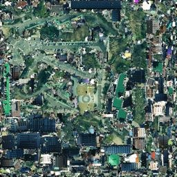
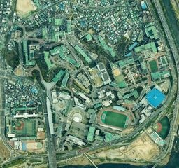

[done] web_search "한양대학교 퓨전테크센터 FTC exterior"
[done] 6 photos retrieved · Wikimedia + hyu.wiki
[done] VLM claim: "glass curtain wall, white concrete structure"
[done] 4 views analyzed → face votes → segments
[review] curtain_wall_glass → itu_glass (0.83) · roof → itu_concrete (0.98)